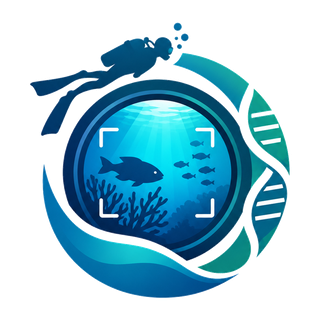
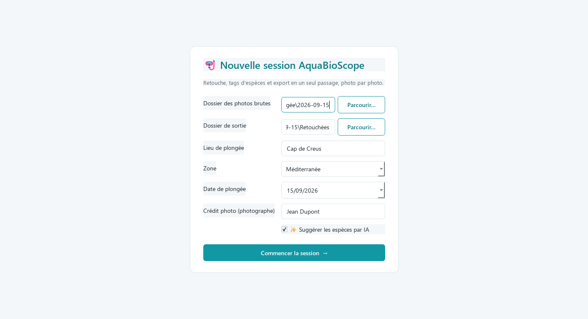
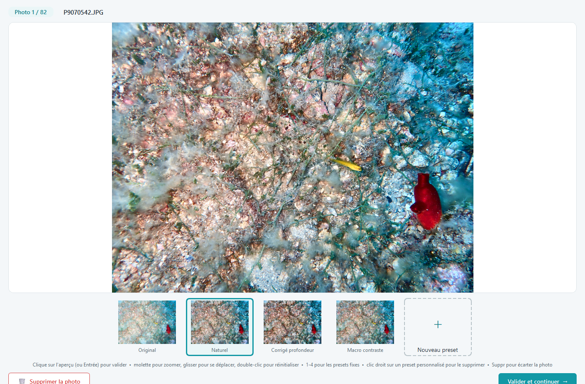
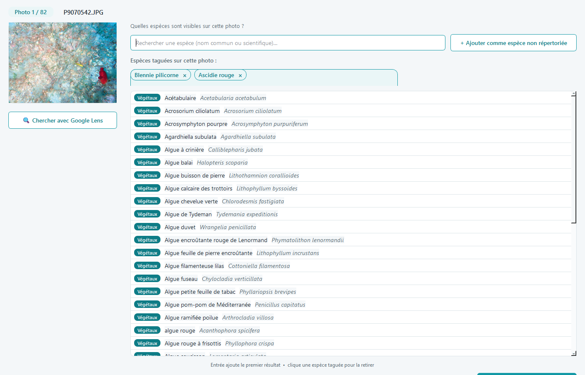
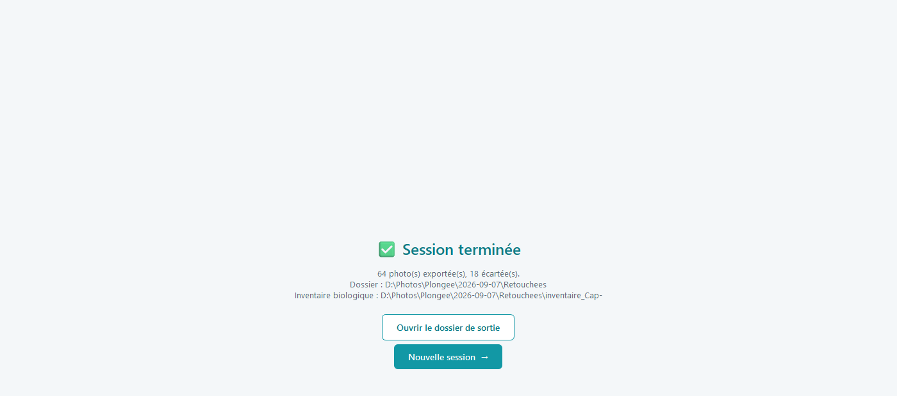

Retouche colorimétrique, identification d'espèces assistée par IA et renommage en masse pour tes photos de plongée sous-marine — un logiciel gratuit, qui se met à jour tout seul.
📰 Voir les nouveautés de chaque versionGratuit, sans compte, sans publicité. Sous Windows, l'application se met à jour toute seule.
Un seul passage, photo par photo : couleur, identification, export.
4 corrections qui s'adaptent à chaque photo (naturel, grand bleu, flash, eau verte), recadrage, presets personnalisés, et RAW pris en charge (dont les Olympus TG).
Plus de 9600 espèces marines, filtrées par zone de plongée, trouvables aussi par leurs noms de plongeurs (« chapon », « mostelle »…), recherche tolérante aux fautes de frappe.
Fichiers renommés par espèce et lieu, crédit photo incrusté, et un inventaire Excel généré à la fin de la session.
L'IA propose les espèces les plus probables de la zone, en un clic : sur nos photos de test, la bonne est la première suggestion 7 fois sur 10, et parmi les cinq 9 fois sur 10. Elle tourne sur ton ordinateur, sans connexion ; quand elle hésite, Google Lens prend le relais.
Quatre étapes, du dossier de photos brutes jusqu'au dossier prêt à partager.
Indique le dossier de tes photos brutes (JPG ou RAW), un dossier de sortie, le lieu et la date de la plongée, la zone géographique, et ton nom pour le crédit photo.
Ces informations sont mémorisées d'une session à l'autre — rien à ressaisir à chaque plongée.
Coche « Suggérer les espèces par IA » pour être aidé à l'identification : la première fois, l'application télécharge le module IA (environ 450 Mo), qui fonctionne ensuite sans connexion.
Les RAW sont pris en charge, y compris les ORF des Olympus / OM System TG (mis au point sur le TG-6) : l'application garde le rendu et les corrections d'objectif de l'appareil (distorsion, vignetage, bruit), et y ajoute le fin détail du RAW en pleine résolution.

Pour chaque photo, choisis parmi 4 corrections (ou l'original) en un clic : elles s'adaptent à la photo, au flash comme en lumière naturelle. Recadrage, zoom à la molette, et presets personnalisés nommés.

Avec l'option IA, les cinq espèces les plus probables s'affichent déjà : un clic (ou Ctrl+1 à 5) pour les ajouter. Plusieurs espèces sur la photo ? « Identifier une zone » fait analyser seulement le sujet que tu encadres.
Sinon, recherche par nom commun, nom de plongeur ou nom scientifique : la recherche tolère les fautes de frappe et les pluriels, et affiche l'embranchement de chaque résultat. Une série sur le même sujet ? Tague-la une fois pour toutes, ou reprends les espèces de la photo précédente en un clic. Une espèce introuvable ? Ajoute-la librement, ou envoie la photo vers Google Lens : le nom que tu y copies est recherché à ton retour.

Une fois toutes les photos passées en revue, AquaBioScope traite les photos retenues en pleine résolution, incruste le crédit, renomme les fichiers, et génère un inventaire Excel des espèces observées pendant la session.

Windows : un installateur classique, sans droits administrateur. macOS et Linux : un seul fichier à lancer.
chmod +x) puis double-clique dessus.Écris-moi directement, je lis tout.